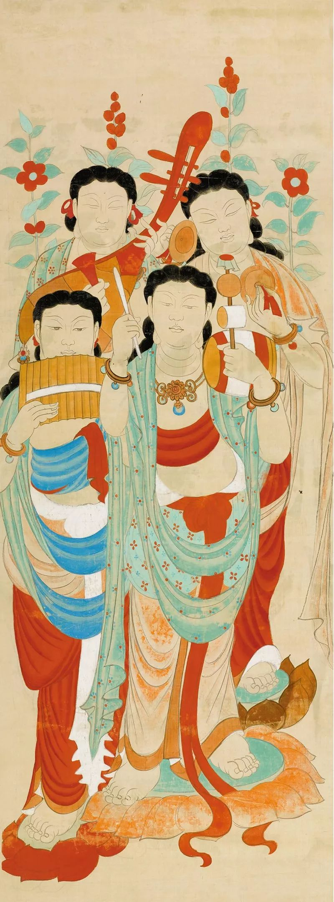
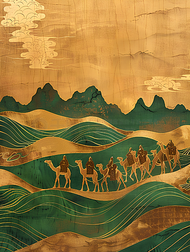

东方的奢侈品
敦煌出土的丝绸制品，展示了当时高超的纺织技术和丰富的图案设计。
一条路，把长安和罗马连了起来。
丝绸之路不仅是一条贸易通道，更是一条文化交融的大动脉。敦煌正是这条大动脉上的重要节点。
丝绸之路的历史可以追溯到汉代。张骞出使西域，开辟了这条连接东西方的贸易通道。从此，中国的丝绸、茶叶、瓷器源源不断地运往西方，而西方的香料、宝石、玻璃也来到了中国。
敦煌位于河西走廊的西端，是丝绸之路上的重要驿站。商队在这里补给、休息，僧侣在这里传教、讲学，各种文化在这里交汇、融合。
敦煌莫高窟的开凿，也与丝绸之路密切相关。往来于丝绸之路上的商人、僧侣，在敦煌开窟造像，祈求旅途平安，也把各地的艺术风格带到了敦煌。


敦煌出土了大量与丝绸之路相关的文物，见证了这条古老商路的繁荣。
敦煌出土的丝绸制品，展示了当时高超的纺织技术和丰富的图案设计。
敦煌文书中有大量关于丝绸之路的记载，包括商队名单、贸易记录、契约文书等。
敦煌出土了来自不同国家和地区的货币，证明这里是国际贸易的重要节点。
敦煌佛像融合了东西方艺术风格，是丝绸之路文化交流的最好证明。